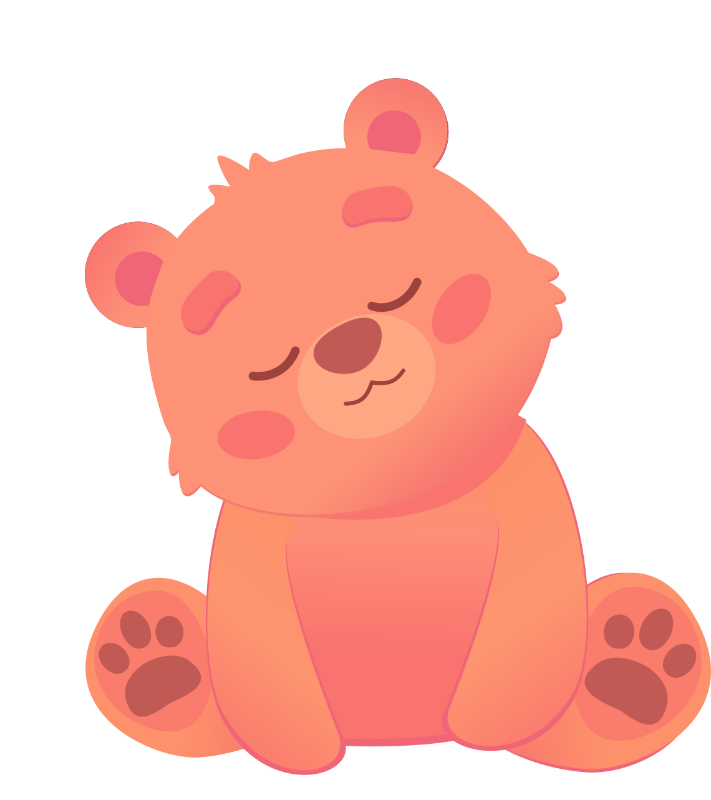
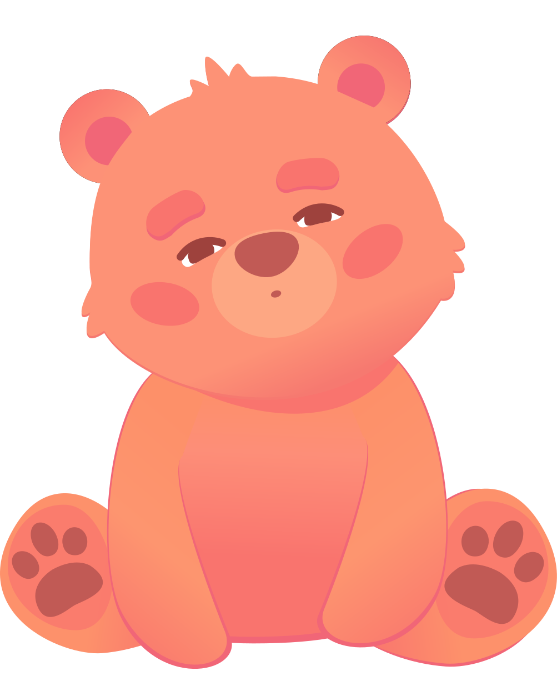
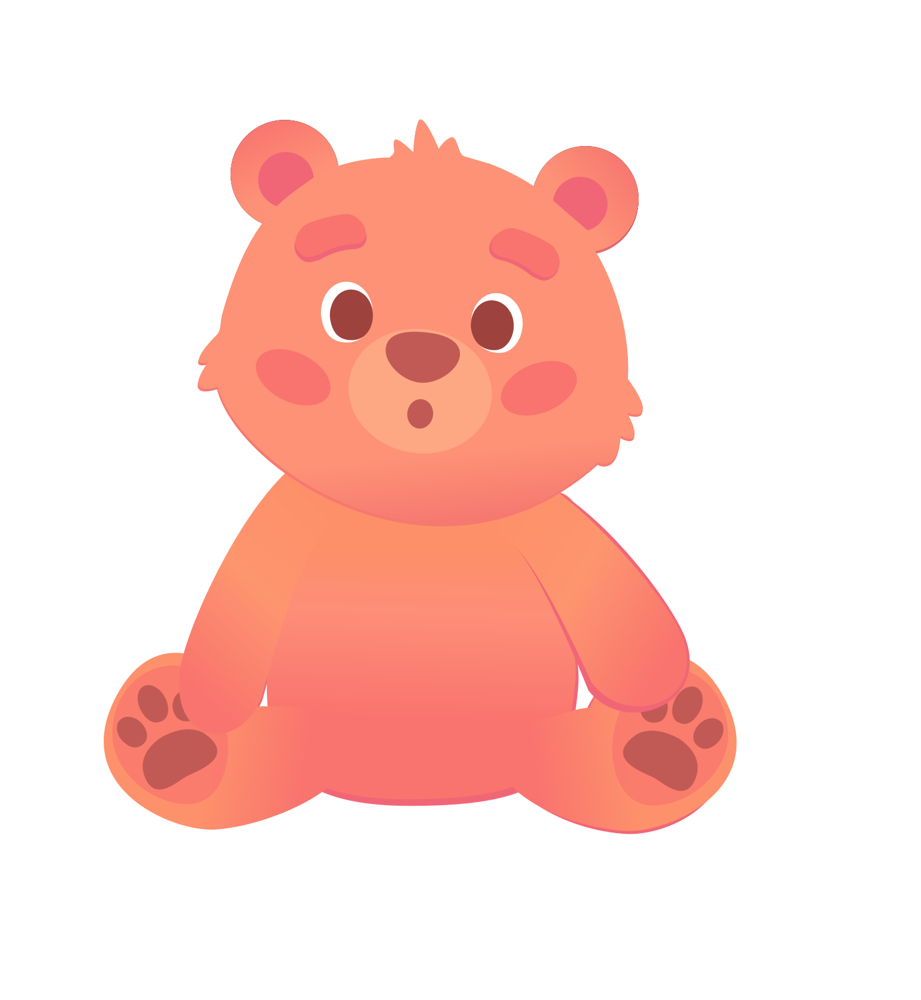

O Cadu organiza as informações dos profissionais e cria um histórico claro do desenvolvimento da criança, para que você entenda o que está acontecendo.
Hoje, o acompanhamento existe. Nem sempre é fácil de entender.
Desenvolvido a partir da Clínica Casa do Urso, com dados reais de crianças em acompanhamento desde 2023.
O problema
O cuidado na você acontece. O problema é que ele não está organizado em lugar nenhum.
Com o tempo, isso gera perda de informação, retrabalho e dificuldade de tomar decisões com segurança.
Consequência
O Cadu
O Cadu reúne as informações de todos os profissionais que acompanham seu filho e mostra a evolução ao longo do tempo, de forma clara, sem você precisar juntar nada manualmente.
Os profissionais registram os atendimentos. Cada sessão entra no histórico do seu filho automaticamente.
Tudo fica organizado no mesmo lugar. Um perfil único do seu filho, construído por toda a equipe.
O histórico se constrói automaticamente. Você consegue ver o que mudou ao longo do tempo.
Você acompanha com clareza. Sem precisar ligar, perguntar ou juntar informações sozinho.
As decisões ficam mais fáceis. Porque você tem uma visão real do desenvolvimento do seu filho.
O que você passa a ter
Ele aprende com as informações da rotina em casa.
Organiza tudo de forma automática.
E ajuda você a entender padrões com mais clareza.
Essas informações também ajudam os profissionais a acompanhar melhor, criando uma visão mais completa da criança.
O Cadu conecta o que acontece em casa com o acompanhamento dos profissionais.
Isso ajuda a construir um entendimento mais claro.
E permite decisões mais seguras sobre o desenvolvimento.
Acompanhamento que evolui com a criança
O CADU não é só um lugar para guardar informações. Ele acompanha a rotina, conecta o que acontece no dia a dia e vai ficando mais útil conforme você usa.
Antes do upload do neuropsicológico, o CADU aparece dormindo no chat. Quando a família faz o upload, ele nasce. A partir daí, ele cresce com as conquistas e marcos da criança.



O que muda
Você não precisa mais tentar
juntar tudo sozinho.
Para você
Sem uma visão clara, cada informação parece solta. Com o Cadu, você consegue entender o que está acontecendo com seu filho de forma contínua, sem precisar perguntar, ligar ou anotar tudo manualmente.
Como começar
Isso ajuda a começar o acompanhamento desde o início.
E tenha o acompanhamento no seu dia a dia.
Isso ajuda a começar com contexto.
Ele organiza as informações.
Aprende com a rotina do seu filho.
E vai ficando mais preciso ao longo do tempo.
Fechamento
O Cadu usa tecnologia para organizar e conectar informações automaticamente, ajudando você a acompanhar o desenvolvimento com mais clareza.
O Cadu ajuda você a entender melhor, sem precisar interpretar tudo sozinho.
CADU / Para pais
Você pode começar assim que o acesso for liberado.